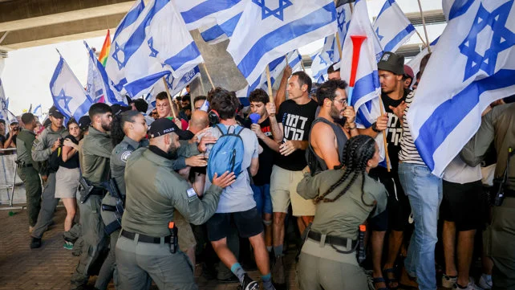

להבים ומגנים: כך התדרדרה הפגנת המחאה מול הכנסת לעימותים עם המשטרה
אלפי מפגינים התקהלו אמש מול הכנסת במה שהיה צפוי להיות עוד הפגנה שגרתית בשורה הארוכה של מחאות החודשים האחרונים. ההפגנה, ה-34 ברציפות מאז תחילת הקמפיין, נפתחה כשגרה: נאומים מהבמה, שירה, ודגלי ישראל לאורך כל הרחוב. אך לפנות ערב, כשקבוצה קטנה מתוך המפגינים פרצה את המתרס שהציבה המשטרה והחלה לצעוד לעבר כביש איילון, המצב השתנה במהירות.

מהפגנת המחאה מול הכנסת, אמש (אילוסטרציה)
שוטרי משמר הגבול שניסו לעצור את הפורצים נתקלו בהתנגדות פיזית, ותוך דקות נורו מכלי גז מדמיע לעבר הקהל. עדי ראייה מספרים על בלבול ובהלה, בעוד אחרים טוענים שהשוטרים פעלו באלימות מופרזת נגד מפגינים שלא נטלו חלק בפריצה. "פתאום היה עשן בכל מקום, אנשים צרחו וניסו לברוח, ולא היה ברור מאיפה זה בא", סיפרה מפגינה בת 28 שהשתתפה בהפגנה.
תוך דקות התמלא הכביש בעשן, ומפגינים נראו רצים לכל הכיוונים בעוד שוטרים על גבי סוסים וניידות דחפו את הקהל לאחור. צוותי מד"א שהוזעקו למקום טיפלו ב-12 פצועים, רובם מפגיעות גז מדמיע ומעיכה, ושניים מהם הובהלו לבית החולים במצב קל-בינוני. דובר מד"א מסר כי גם שני שוטרים פונו לבדיקה לאחר שנחבטו באבנים שהושלכו מתוך הקהל.
בסביבות השעה 22:00 הצליחה המשטרה לפתוח את הכביש לתנועה, אך עשרות מפגינים נותרו במקום עוד שעות, חלקם ישבו על הכביש בשקט במה שתואר על ידי המשטרה כ"סיום הדרגתי ומבוקר" של האירוע.
בשעות הלילה המוקדמות פונה השטח, ולפי דיווחים ראשוניים נעצרו תשעה מפגינים, שלושה מהם בחשד לתקיפת שוטר. מוקדם יותר הבוקר שוחררו שישה מהם ללא תנאים, בעוד שלושה הנותרים יובאו להארכת מעצר בבית המשפט בתל אביב. סך הכל נערכו במקום כ-400 שוטרים וכ-60 רכבי ניידת, לפי הערכת דובר המשטרה, מספרים שמבטאים לדבריו "היערכות חריגה לאירוע שהוגדר מראש בסיכון גבוה".
תגובות מהזירה הפוליטית
משטרת ישראל הודיעה כי תפתח בתחקיר מבצעי על האירוע, ובמשרדי ראש הממשלה נמסר כי "הזכות להפגין אינה זכות לפגוע בשלום הציבור ובסדר הציבורי, ומי שפורץ מתרסים ותוקף שוטרים יישא באחריות המלאה למעשיו". גורם בכיר בליכוד הוסיף כי "אלימות מצד מיעוט קיצוני לא תכתיב את הסדר היומי".
קיצוניים משני הצדדים - פרויקט מיוחד של שקוף
בדקנו אלפי פעולות פוליטיות מתועדות משני קצוות המפה הפוליטית בישראל - והפכנו אותן לכלי אינטראקטיבי שמאפשר לראות מה באמת קורה בשטח.
לפרויקט האינטרקטיביבצד השני, ארגוני המחאה שיזמו את ההפגנה מיהרו להתנער מהאירועים והדגישו שהפריצה בוצעה על ידי "קבוצה שולית שלא פעלה בתיאום עם הנהגת המחאה". יו"ר ועד ההפגנות אמרה ל"שקוף" כי "אלפי המפגינים שהגיעו אמש הפגינו בשקט ובסדר מוחלט, ואי אפשר להכפיש מחאה לגיטימית שלמה בגלל מעשיהם של בודדים".
חברי כנסת מהאופוזיציה תבעו הקמת ועדת חקירה לבדיקת התנהלות המשטרה, וטענו כי השימוש בגז מדמיע נגד הקהל הרחב היה "בלתי פרופורציונלי ומסוכן". מנגד, חברי קואליציה קראו להחמיר את האכיפה בהפגנות הבאות ולהגביר את הענישה על "הפרת הסדר הציבורי".
גם ארגוני זכויות אדם הצטרפו לדיון: בארגון "סיירת השקיפות" נמסר כי הם "פנו למשטרה בבקשה למסור את הנחיות הפתיחה באש ובגז מדמיע מאותו ערב", ואילו מבקר המשטרה הודיע כי יבדוק את ההתנהלות באופן עצמאי, במקביל לתחקיר הפנימי.
לא המקרה הראשון
זהו לא העימות החריף הראשון מסוג זה בחודשים האחרונים. בפברואר האחרון דווח על תקרית דומה, קטנה בהיקפה, בצומת הקריה בתל אביב, ובחודש מרץ נפתחה חקירה משטרתית שנסגרה בלא כתב אישום נגד מפגין שנחבט על ידי שוטר במהלך הפגנה. גורמים במשטרה מציינים כי ככל שמתקרב המועד לדיון הקריטי בכנסת, כך גוברת המתיחות בשטח משבוע לשבוע.
מה הלאה
ועד ההפגנות הודיע כי בכוונתו לקיים את ההפגנה השבועית הבאה כמתוכנן, ואף הביע כוונה לפנות לבג"ץ אם המשטרה תנסה להגביל את מסלול הצעדה. בינתיים, התיקים נגד שלושת המפגינים שנותרו במעצר צפויים להמשיך להתברר בימים הקרובים, וברשתות החברתיות התפתח דיון נרחב סביב סרטונים מהאירוע שמציגים זוויות שונות ולעיתים סותרות של אותם רגעים.